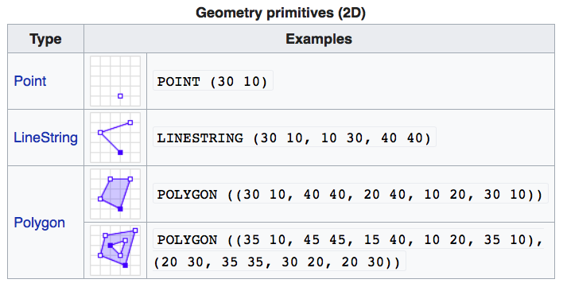
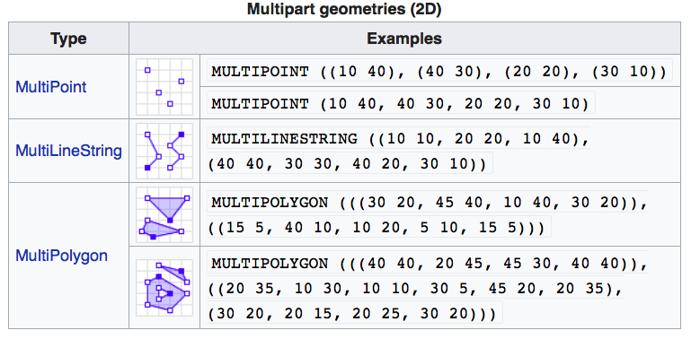
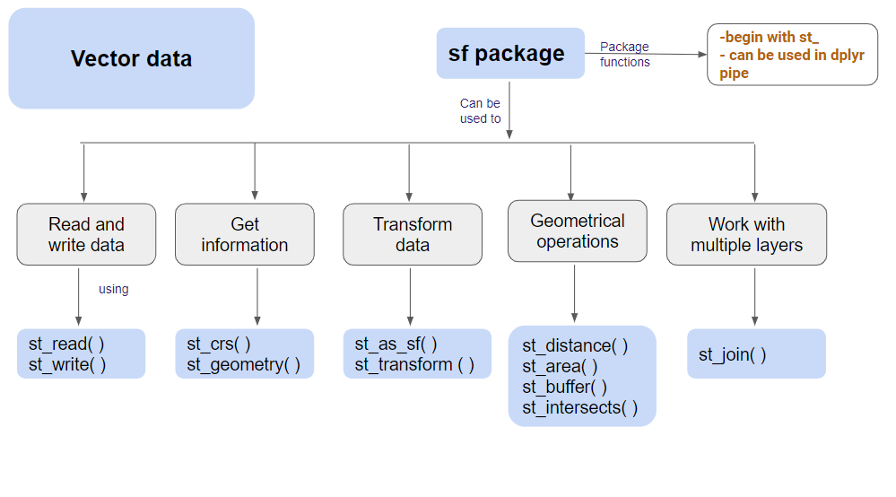
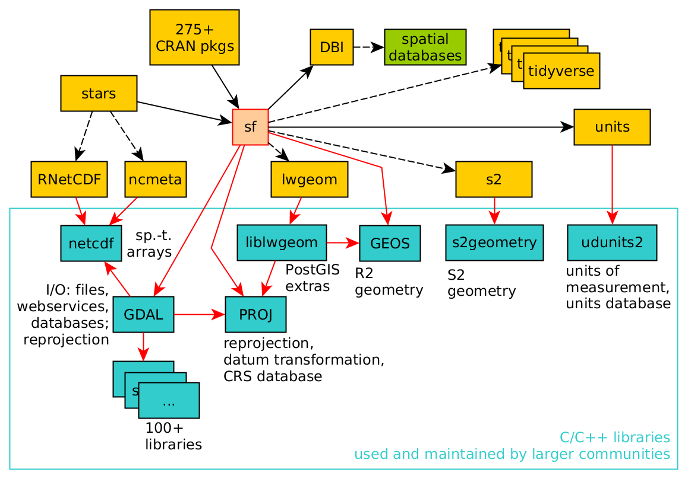
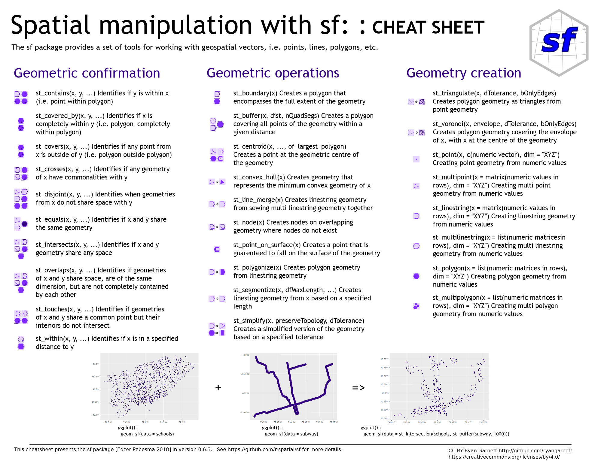

Introduction to the
sf Package
Introduction
- Objective: Learn the basics of the
sfpackage in R for spatial data analysis. - Why
sf?: Simplifies handling, analysis, and visualization of spatial data in R.
Overview of Spatial Data in R
- Spatial Data: Data associated with locations in a geometric space.
- Types:
- Point data
- Line data
- Polygon data
- Applications: Environmental monitoring, urban planning, epidemiology.
The sf Package
The sf package is an R implementation of Simple Features.
This package incorporates:
- A new spatial data class system in R
- Functions for reading and writing data
- Tools for spatial operations on vectors

sf packageinstall.packages("sf")Why the sf Package?
- Integration: Seamlessly integrates with the tidyverse.
- Efficiency: More efficient and user-friendly than previous spatial packages.
- Standards: Adheres to international standards for spatial data.

Geometry Types in sf
 

Loading Spatial Data into R using sf
library(sf)
path_to_shape_file <- "path/to/shapefile.shp"
spatial_data <- st_read(path_to_shape_file)Viewing the sf Object
print(spatial_data)Plotting the sf Object
ggplot(spatial_data) +
geom_sf()ggplot(spatial_data) +
geom_sf(aes(color = some_attribute))Concept of the sf Package
- Spatial Data Frame: Combines attributes and geometry.
- Key Functions:
st_read(): Read spatial data.st_write(): Write spatial data.st_transform(): Transform coordinate systems.

Dependencies of the sf Package

- Key Dependencies:
- GDAL: Geospatial Data Abstraction Library
- PROJ: Cartographic Projections Library
- GEOS: Geometry Engine
Methods in sf
methods(class="sf")- Common Methods:
st_union(): Union of geometries.st_intersection(): Intersection of geometries.st_buffer(): Buffer around geometries.
Interactive Mapping with sf
library(mapview)
mapview(spatial_data)Practical Exercise: Loading and Plotting Data
- Load Data:
- Use
st_read()to load spatial data. - Example shapefile:
"path/to/shapefile.shp"
- Use
- View Data:
- Print the
sfobject.
- Print the
- Plot Data:
- Use
ggplot2to create a basic map.
- Use
library(sf)
spatial_data <- st_read("path/to/shapefile.shp")
print(spatial_data)
ggplot(spatial_data) + geom_sf()Practical Exercise: Advanced Plotting
- Color by Attribute:
- Use
aes()to map colors to an attribute.
- Use
- Interactive Map:
- Use
mapviewfor interactive mapping.
- Use
ggplot(spatial_data) + geom_sf(aes(color = attribute))
library(mapview)
mapview(spatial_data)Spatial Operations with sf
- Buffering: Create buffer zones around geometries.
buffered <- st_buffer(spatial_data, dist = 100)
ggplot(buffered) + geom_sf()- Intersection: Find intersecting areas between geometries.
intersection <- st_intersection(spatial_data, another_spatial_layer)
ggplot(intersection) + geom_sf()Spatial Joins with sf
- Spatial Join: Combine attributes from different spatial datasets based on their spatial relationship.
joined_data <- st_join(spatial_data, another_spatial_layer)
ggplot(joined_data) + geom_sf()Coordinate Transformations with sf
- Transform Coordinates: Change the coordinate reference system (CRS) of spatial data.
transformed_data <- st_transform(spatial_data, crs = 4326)
ggplot(transformed_data) + geom_sf()Where to Look for Help?


- Resource: sf Cheatsheet
Questions
- Any doubts or questions?
- Hands-on practice time!